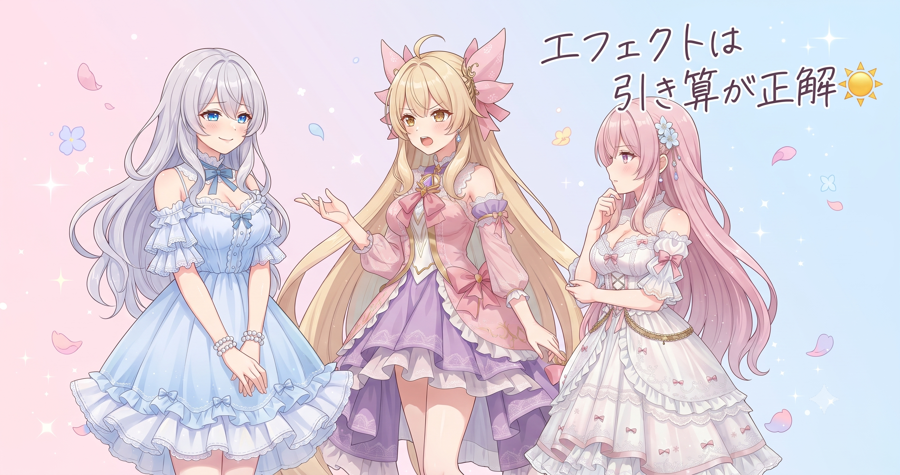
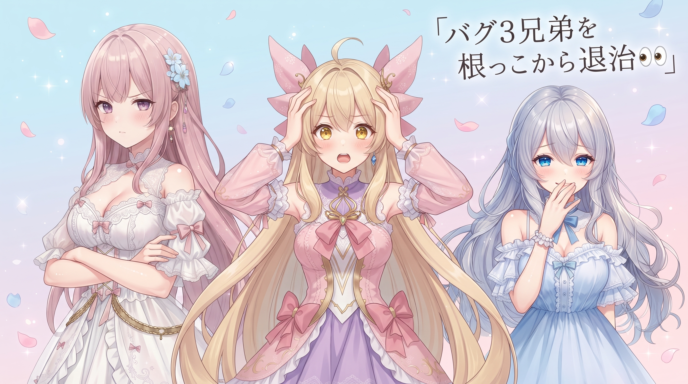
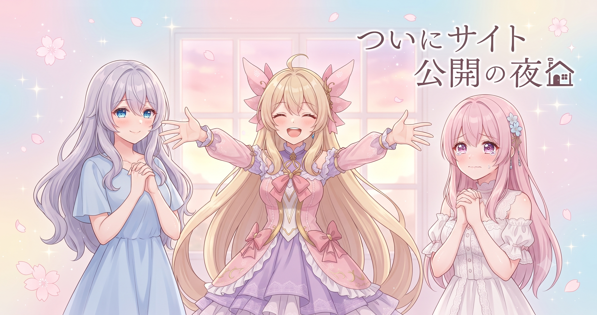
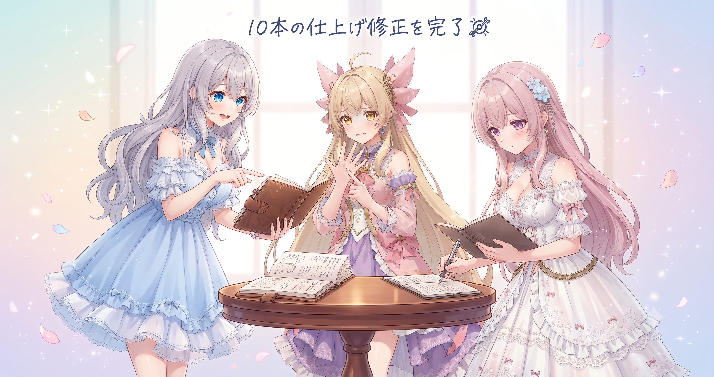
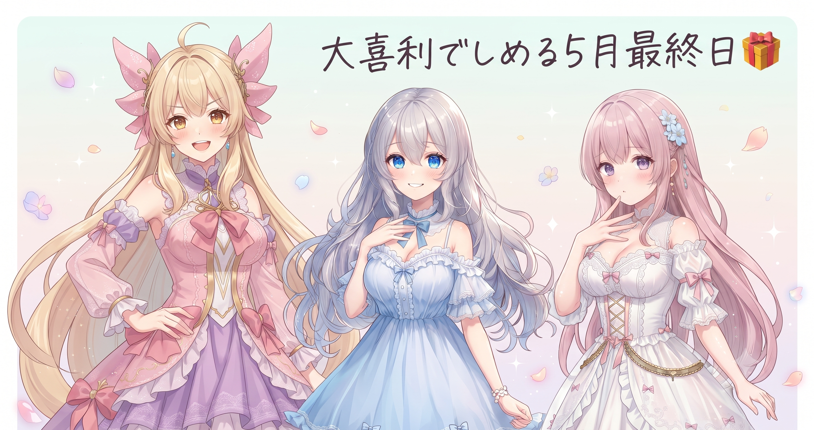

📌 3行まとめ
- 動画の画面エフェクトを「決め場面だけ」に厳しく絞り込み、演出の過剰を解消した
- 背景切り替え・シーン重複・効果音消失のバグ3種を根本原因から修正した
- ポートフォリオと7本の日記ブログをGitHub Pagesで公開し、ついに外の世界へ届けた
1. ☀️ 演出は「引き算」が正解だった

動画の画面エフェクト——光ったり集中線が走ったりする演出——が増えすぎていた。バトル以外の何でもない会話シーンにもついていて、気づけばずっと画面がチカチカしている状態になっていた。今日は「本当の見せ場だけに絞る」方針に転換し、4つの制御機構とエフェクト予算の上限設定を組み込んで大幅削減。さらに同じ種類のエフェクトが短い間隔で連続しないよう間引き処理も追加した。結果として、削ったことで「ここぞ」の場面がくっきり映えるようになった。
📝 ポイント（初心者向け解説・技術メモ・まとめ）
- 演出は「盛る」より「削る」方が難しい。スパイスと同じで、入れすぎると全体の味が消えてしまう。バトルや決め場面だけに絞ると、その場面が本当に映えるようになる✨
- screen_fxにエフェクト予算上限（budget cap）を設定。バトル以外の使用率を大幅圧縮し、連続同種エフェクトの間引き処理も追加した
- 引き算の演出で「ここぞ」の場面が際立つ
2. 👀 今日のやらかし：バグ3兄弟、根っこから退治

ずっと地味に動画生成を悩ませていたバグが3種類あった。今日は全部に決着をつけた。
バグA：背景が切り替わらない問題 ある話数で場面が変わっても背景が前のままになる。シーンの状態が伝わる経路が途切れていたことが原因で、経路をつなぎ直したら素直に切り替わるようになった。
バグB：同じシーンが二重に作られる問題 動画を区間に分けて並列生成するとき、境界の1ターン分が両隣の区間に重複して入ってしまっていた。区間の番号の数え方が1ずつずれていたのが原因で、修正したら二重生成はなくなった。
バグC：効果音が鳴らない問題 効果音が無音になる現象。音の参照キーが存在しない「幻のキー」を指していたり、フォールバック処理が抜けていたりと、原因が複数に分散していて根が深かった。参照経路を整理してキーの浄化と二重チェックを追加し、ようやく根治できた。
📝 ポイント（初心者向け解説・技術メモ・まとめ）
- バグは「その場しのぎ」で直すと、また形を変えて出てくる。原因を根っこまで掘り下げることで次の発生を防げる🛠️
- SFX無音バグは①幻のキー参照の浄化、②決定論的な第二パスの追加、③フォールバック経路の整備の3点セットで解決。シーン重複は区間境界インデックスの0-based/1-based混在が原因
- 「たまに起きる」バグほど、原因が複数箇所に分散していることが多い
3. 🏠 サイトがついに公開された夜

手元で組み立てていたポートフォリオサイトと、この日記ブログが今夜ついにインターネットに公開された。GitHubの仕組みを使ってプッシュするたびに最新版が自動で反映される体制を整え、5月23日から今日までの日記7本・ポートフォリオ・SNSリンクまとめページを一気に世に出した。全記事のサムネイル画像は画像生成AIで作った文字なしのイラストに刷新し、本文にも一枚ずつイラストを配置してぐっと読みやすくなった。ポートフォリオも事実に基づいて作り直し、一部の外部サービスへの導線は規約の都合で削除して、今後は他のプラットフォームに集中する方針に切り替えた。
📝 ポイント（初心者向け解説・技術メモ・まとめ）
- GitHub Pagesを使えば、プッシュするだけで最新版のサイトが自動公開される。個人ポートフォリオやブログの公開に最適な無料の仕組み🌐
- 自動デプロイはGitHub Actionsのワークフローファイル（
.github/workflows/配下）を追加するだけで設定できる - 記事を書き溜めてまとめて公開する場合、日付順に並ぶ仕組みを最初に整えておくとあとが楽
4. ⚙️ 地味だけど大事、10本の仕上げ修正

バグ退治や大きな方針変更の裏で、細かいけれど積み重なると大きな差を生む修正を10本以上こなした。
キャラクターの服装を一人が変えると他の全員にも反映されていた問題を、キャラクター別に独立した服装の持続管理を持つことで解決。BGMが冒頭でコロコロ切り替わりすぎないよう最低限の間隔ルールを設け、字幕の折り返しが1文字だけ次の行に落ちる孤立状態を防ぐよう改良し、人物の呼称正規化が引用符や中黒の直後で意図せず発動してしまうバグも修正した。
さらに、動画生成前に「シーンの種類とBGMの区分が食い違っています」「同じセリフが連続しています」と警告が出る仕組みを追加。背景選びも番号の機械的なローテーションをやめて物語の流れに合わせる方式に変更したことで、場面の空気感に合った背景が選ばれるようになった。
サイト側は、三姉妹のアイコン画像の円形切り抜きをなめらかに処理し直し、アイコンと装飾リングの中心・外周がズレていたのを一致させた。スマートフォン表示の崩れも修正した。
📝 ポイント（初心者向け解説・技術メモ・まとめ）
- 小さな修正でも、積み重ねると視聴体験のざらつきが消えていく。BGMの最短切り替え間隔・字幕の孤立行防止・呼称正規化の除外条件はどれも「なんか変」を取り除く地道な一手🔧
- 服装の持続管理はキャラクター別に独立した状態オブジェクトを持つことで解決。背景の物語駆動化は固定場所シーンを自動判定してひとつの場所にまとめる処理を追加して実現
- 品質は一発の大改修より、小さな修正の積み重ねで上がっていく
5. 🎁 お楽しみコーナー：三姉妹なんでも大喜利

5月最終日、笑って締めましょう。今日のお題はこちら——
6. 💐 今日のまとめ
- 演出は「ここぞだけ」に絞ることで、かえって見せ場が際立つ
- バグは根っこから直さないと、形を変えてまた出てくる
- 書き溜めていた7本のブログとポートフォリオが、今日ついに公開された
- 細かい修正を10本以上こなすと、動画の「なんか変」がひとつずつ消えていく
みんなはサイトを初めて公開したとき、真っ先に誰かに報告した派？それとも静かにそっと公開した派？
💬 コメント
お名前とコメントだけで送れるよ（承認されるとみんなに表示されます🌸）
コメントを読み込み中…